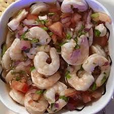
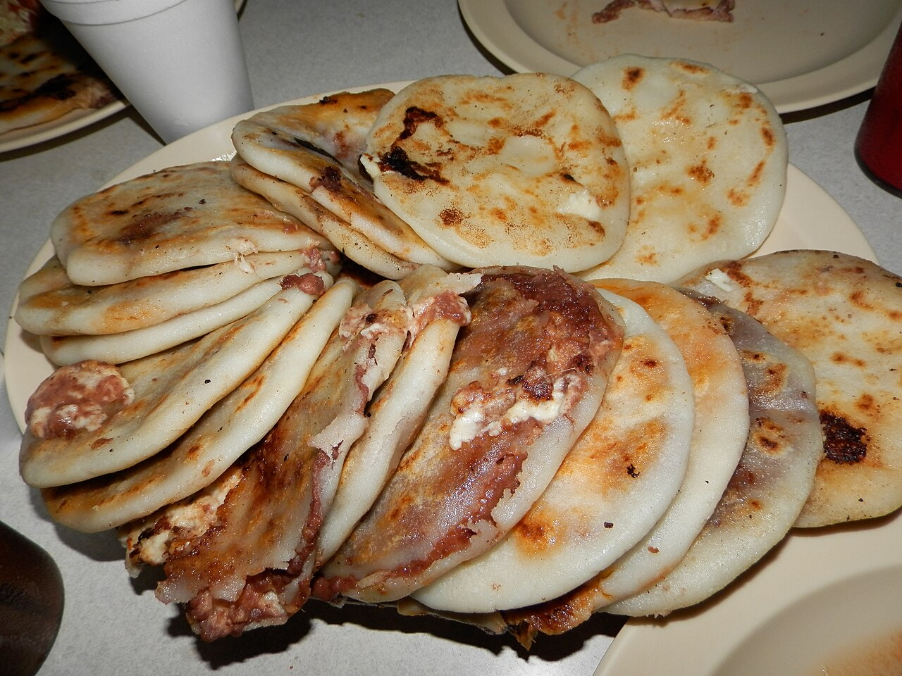
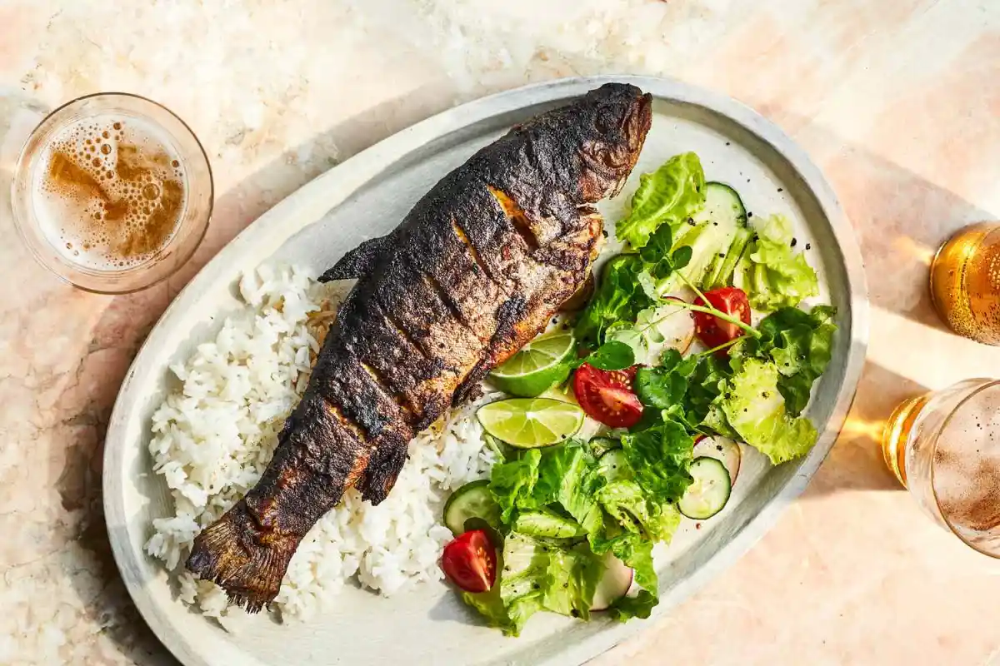
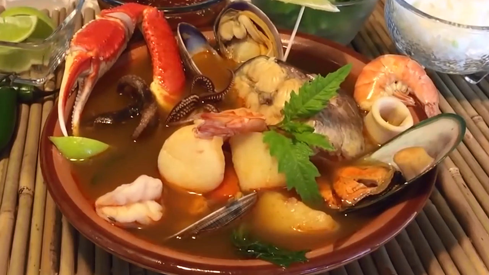
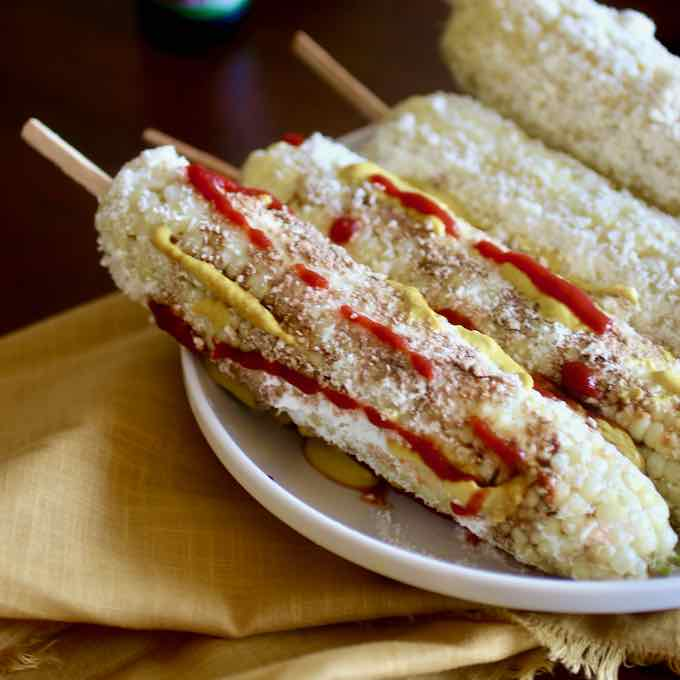

Comida Típica

Ceviche de Camarón
Camarones frescos marinados en limón, tomate, cebolla, cilantro y chile. Servido con tostadas crujientes.
Desde $5.00
Pupusas
El plato nacional por excelencia. Tortillas de masa de maíz rellenas de queso, frijoles o chicharrón, con curtido y salsa de tomate.
Desde $0.75
Pescado Frito Entero
Pescado fresco del día, sazonado y frito en su punto. Acompañado de arroz y ensalada.
Desde $8.00
Sopa de Mariscos
Caldo aromático con camarones, almejas, cangrejo y vegetales frescos. Perfecta al mediodía frente al mar.
Desde $9.00
Yuca Frita con Chicharrón
Yuca crujiente por fuera y suave por dentro, acompañada de chicharrón y curtido. Un favorito entre locales y turistas.
Desde $4.00
Elote Loco
Mazorca de maíz asada con mayonesa, queso rallado, limón y chile. Una botana callejera imposible de resistir.
Desde $1.50